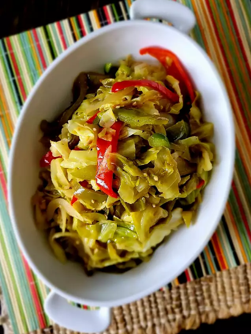

Easy Fried Cabbage

You will not be disappointed by this recipe! It is
quick and easy to make.
Feel free to spice it up however you like!
Ingredients
- 2 tablespoons grapeseed oil
- 1 medium yellow onion, chopped
- 3 cloves garlic, chopped
- 2 teaspoons Cajun seasoning, or to
taste, divided
- 1/2 red bell pepper, sliced
- 1/2 medium green bell pepper, sliced
- 1 medium head cabbage, thinly sliced
- 1 tablespoon butter, or more to taste (optional)
- salt and ground black pepper to taste
Directions
- Heat grapeseed oil in a large cast iron skillet
over medium heat. Add onions and cook until softened,
about 3 minutes. Add garlic, stir, and cook until
fragrant, 1 to 2 minutes. Season with 1 teaspoon cajun
seasoning and stir to combine.
- Mix in red and green bell peppers; cook for 1 to 2
minutes and add cabbage, add remaining 1 teaspoon
cajun seasoning, and stir to combine. Add butter and
stir until melted. Simmer cabbage until it reaches desired
softness, about 15 minutes. Season with salt and pepper.